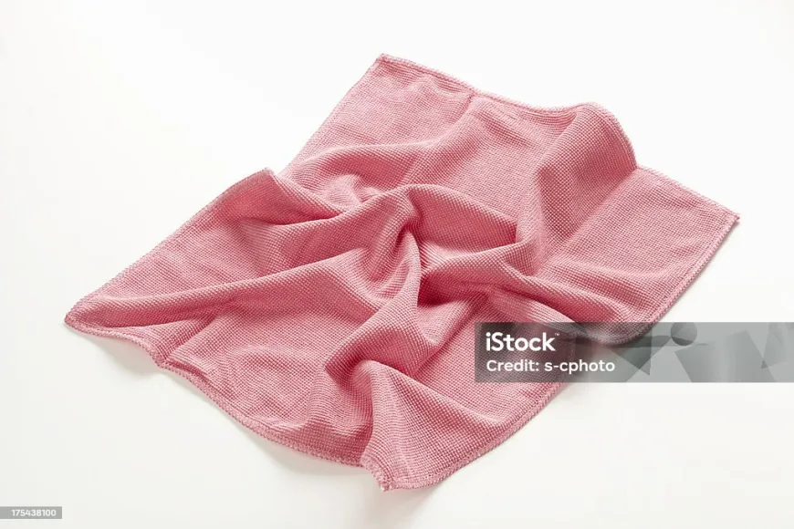
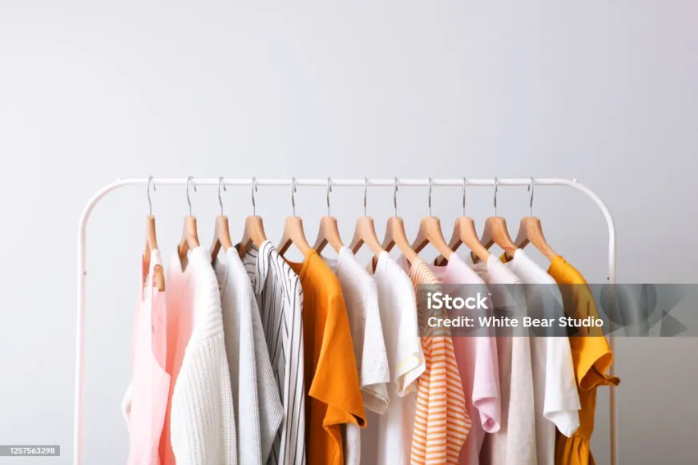
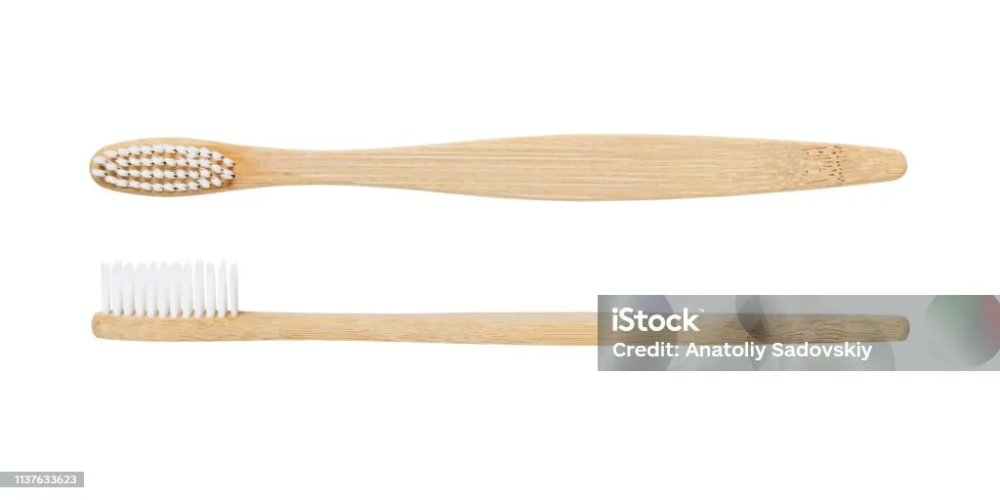

|  |
Compostable Microfiber ClothsOur compostable microfiber cloths are made from natural and sustainable materials that break down easily in compost systems. They offer superior cleaning performance while being environmentally friendly, helping you reduce your carbon footprint. |
|  |
Recycled ClothesOur recycled clothes are made from post-consumer and post-industrial waste materials, such as plastic bottles and textile scraps. By giving new life to discarded materials, we help minimize landfill waste and conserve valuable resources, all while offering stylish and eco-friendly clothing options. |
|  |
Bamboo ToothbrushesSay goodbye to plastic toothbrushes and switch to our eco-friendly bamboo toothbrushes. Made from sustainable bamboo, these toothbrushes are biodegradable and compostable, offering a sustainable alternative to traditional plastic toothbrushes. Help reduce plastic pollution and promote oral health with our environmentally conscious toothbrushes. |